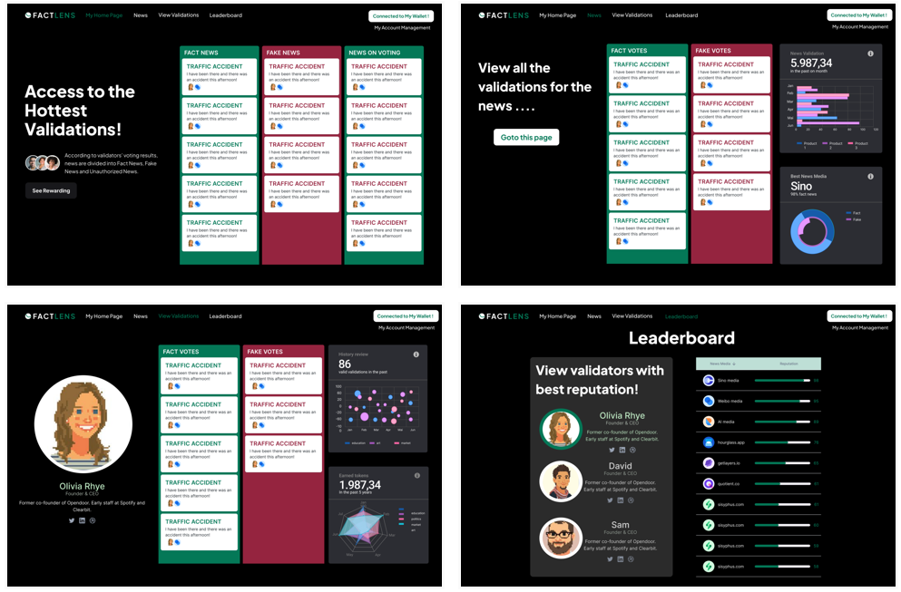

Abstract
With the development of the Internet and social media, news is spreading at an unprecedented speed and scale. In such a context, fake news spreads rapidly, even its spread on social media exceeds the speed of real news, so how to solve the negative impact of fake news becomes an inevitable topic. FactLENS is a decentralized news validation ecosystem, which consists of FactLENS plugin and FactLENS website. Unlike some other decentralized news censorship projects (fact protocol), we focus more on making FactLENS accessible to most readers while using centralized social media, rather than forcing readers to join a whole new web3 platform (e.g. Block Quest for Fact protocol).
Concepts
FactLENS is a decentralized news verification platform that offers transparency by providing publicly accessible validation records and results. The platform includes plugins that can be directly applied to popular media platforms and a website for validators to verify information from any website. Users can view news validation results without changing their browsing habits.
Thus FactLENS has several essential attributes, including:
Transparency: a reputation system that rates media credibility based on the quality of their historical news releases, and publicly transparent validation records and results.
Decentralized and incentives: anyone can be a validator, and validators receive tokens for finding reliable information and providing evidence.
Usability: Users do not need to change their browsing habits to use FactLENS, as they can see news credibility evaluations alongside the news they are browsing.
However, there are potential challenges, such as producing stable results for massive amounts of news without enough validators. To address this, validators are encouraged to prioritize news from high-traffic or popular social media platforms for validation.
Next Steps
1. Aggregation of news by event
To combat the spread of fake news, FactLENS aggregates news by event. This allows users to easily find the correct news related to a particular event after encountering false information. By providing a platform for users to access accurate news, FactLENS aims to promote informed decision-making and prevent the spread of misinformation.
2. News information publishing platform
As our user base grows, we plan to encourage users to directly publish news on FactLENS' portal website. By doing so, users can engage in discussions and vote on news stories, creating a more diverse and robust ecosystem. This will help to promote the stable development of our community.
3. Community governance
To incentivize users to verify news stories, we plan to offer different rewards for different levels of verification difficulty. We believe that community members should have the right to self-governance, ensuring that incentive policies are fair and reasonable. By refining our reward and punishment mechanisms, we hope to create a more effective system for verifying news and promoting accuracy.
Collaborators
Kejiang Qian, Lingjun Mao, Xin Liang, Yimin Ding, Jin Gao, Xinran Wei, Ziyi Guo, Chance Jiajie Li